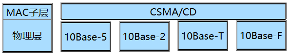

项目二 走进局域网
任务1 认识局域网
局域网的特点
| 相比项 | 特点 |
|---|---|
| 地理分布 | 地理分布范围小，一般为数百米至数千米 |
| 传输速率 | 传输速率高，一般为1~100Mbps |
| 误码率 | 误码率低，一般在10-11~10-8以下 |
| 使用主体 | 以个人计算机为主体，包括终端及各种外设，网络中一般不设中央主机系统 |
| 与OSI关系 | 一般包含OSI/RM参考模型中的低三层功能 |
| 拓扑结构 | 局域网大多采用总线型、星型及环型，也包括树型结构 |
| 归属 | 归一个单一组织所拥有和使用，不受公共网络管理规定的约束 |
局域网的组成（硬件）
- 网络适配器：NIC－网卡
- 网络服务器
- 文件打印服务器
- 数据库服务器
- 应用服务器
- WWW服务器
- FTP服务器
- 电子邮件服务器
- 工作站
- 有盘工作站
- 无盘工作站
- 传输媒体
局域网的组成（软件）
- 网络系统软件
- UNIX
- Linux
- NetWare
- Windows Server
- ......
- 网络应用软件
- Foxmail
- 迅雷
- 浏览器
- ......
IEEE802与OSI/RM
IEEE802LAN物理层
物理层规范：
- 采用基带信号传输
- 数据的编码采用曼彻斯特编码
- 传输介质是双绞线、同轴电缆和光缆等
- 拓扑结构可以是总线型、树型、星型和环型
- 传输速率有10Mbps、16Mbps、100Mbps、1000Mbps
IEEE802LAN的数据链路层
- MAC子层的功能
- MAC子层与传输介质有关
- CSMA/CD
- Token Ring
- Token Bus
- MAC地址－48b
- 前24b——由IEEE统一分配给厂商即：OUI
- 后24b——由厂商分配给每一块网卡
- MAC子层与传输介质有关
- LCC子层的功能
- LLC在MAC子层的支持下向网络层提供服务，与传输介质无关。主要功能包括：将数据组成帧，并对数据帧进行顺序控制、差错控制和流量控制，使不可靠的物理链路变为可靠的链路
局域网技术要素
局域网主要解决ISO网络模型中最低两层物理层、数据链路层的功能，决定局域网的组成方式、信道容量、通信速度、信息传输方式和效率等技术因素，主要有：
- 网络拓扑结构
- 传输介质
- 介质访问控制方法
IEEE802标准系列
局域网的网络结构
相当于网络的按工作模式分类
- 对等式结构
- 客户机/服务器网络（C/S模式）
以太网的分类
- 标准以太网（10Mbps）
 - 快速以太网（100Mbps）
- 千兆以太网（1000Mbps）
- 万兆以太网（10000Mbps）
历届高考样题/真题
任务2 准备传输介质
传输介质的分类
- 有线
- 双绞线
- UTP
- STP
- 同轴电缆
- 粗缆
- 细缆
- 光纤
- 单模
- 多模
- 双绞线
- 无线
- 无线电波
- 红外线
- 微波
- 蓝牙
- 激光
- ......
双绞线制作
数据通信的相关概念
- 数据传输速度
- 指信道每秒所传输的二进制比特数，单位：bps或bit/s
- 误码率
- 传输二进制数据位时出现错误的概率，计算公式Pe=Ne/N
- 信道带宽
- 是描述信道传输能力的技术指标，它的大小是由信道的物理特性决定的，单位：Hz(赫[兹])
- 信道容量
- 信道传输数据速率的上限，单位：bps或bit/s
- 信道的通信方式
- 单工通信
- 半双工通信
- 全双工通信
- 通信的传输方式
- 基带传输
- 频带（宽带）传输
介质访问控制方法
- CSMA/CD（载波监听多路访问冲突检测）
- 先听后发，边听边发，冲突停发（尝试16次），随机重发——原理比较简单，争用型，易实现，平等地位 ，不提供优先级控制。被广泛应用于以太网（Ethernet）。
- Token Ring（令牌环）
- 提供优先权服务，实时性，时延确定，效率较高，没有冲突。应用于令牌环网，常用于工业控制。
- Token Bus（令牌总线）
- 延迟时间确定，实时性强，优先权服务。应用于令牌总线网络，令牌总线访问控制是在物理总线上建立一个逻辑环。
历届高考样题/真题
任务3 熟悉网络硬件设备
网络互连设备
- 网络适配器（NIC——网卡）
- 功能：物理连接和电信号匹配，帧的发送与接收、帧的封装与拆封、介质访问控制、数据的编码与解码以及数据缓存
- 分类：按带宽分、按网络接口分（RJ-45接口，RJ-11接口，SC光纤接口，FDDI接口，AUI接口，BNC接口，Console接口）、按所支持的总线类型分
- OSI层次：数据链路层
- 中继器（Repeater）
- 功能：
重新发送或者转发，来扩大网络传输的距离。再生和还原- OSI层次：物理层
- 集线器（HUB）
- 功能：对接收到的信号进行再生整形放大，以扩大网络的传输距离，同时把所有节点集中在以它为中心的节点上。显然它具有中继器的功能
- 分类：8、12、16、24口
- OSI层次：物理层
- 交换机（Switch）
- 功能：
- 地址学习功能（记录源MAC地址入“端口-MAC地址”映射表）；
- 转发/过滤功能；
- 消除回路功能
- 分类：按常见形式分、按其应用的网络规模层次分、按交换机端口速率的不同分、按交换机所跨OSI层次分
- OSI层次：数据链路层
- 功能：
- 路由器（Router），又称网关设备（Gateway）
- 功能：
- 路由功能（寻径功能）——具有判断网络地址和选择IP路径的功能
- 交换功能
- 隔离广播 、指定访问规则
- 异种网络互连
- 子网间的速率匹配
- 分类：根据其接入位置和重要性分
- OSI层次：网络层
- 功能：
以太网的相关计算题
- 集线器共享带宽的计算
- 工作在同一集线器的设备共享带宽，同一时刻最大吞吐量即是其端口的带宽
- 全双工的交换机端口容量
- 端口容量＝2*（n*100Mbps+m*1000Mbps）（n：表示交换机有n个100M端口，m：表示交换机有m个1000M端口）
例如:一台8*100M/1*1000M口的交换机端口容量为3.6G- 端口容量＝2*（n*100Mbps+m*1000Mbps）（n：表示交换机有n个100M端口，m：表示交换机有m个1000M端口）
交换机的基本配置
- 带外管理
- 首次配置交换机
- 无法进行带内管理时
- 带内管理
- 通过Telnet程序登录到交换机
- 通过HTTP协议访问交换机
- 通过厂商配备的网管软件对交换机进行配置管理
数据帧的转发方式
- （1）直接交换方式
- A.交换速度快，端口交换时间短
B.网络响应速率快，延迟时间小
C.可靠性差，不提供检错能力
D.没有速率匹配、流量控制功能
E.适用于小型交换机 - （2）存储转发方式
- A.可靠传输
B.延迟时间大
C.支持不同速率的入/出口交换 - （3）改进的直接交换方式
- 这是介于前两者之间的一种解决方案。它检查数据包的长度是否够64个字节，如果小于64字节，说明是假包，则丢弃该包；如果大于64字节，则发送该包。这种方式也不提供数据校验。它的数据处理速度比存储转发方式快，但比直通式慢
三层交换技术
具有路由功能的交换机，是路由器和二层交换机的有机集合体
- 原理与功能
- 工作在OSI参考模型的第3层（网络层）
- 具有第三层路由功能，二层交换转发
- 把三层路由功能和二层交换功能相结合
- 提高路由器的分组转发速度，解决传统路由器的传输瓶颈问题
- 应用
- 主要用途是代替传统路由器作为网络的核心
- 作为骨干交换机
- 支持Trunk协议
历届高考样题/真题
任务4 组建局域网
Ipconfig命令
- Ipconfig（不带参数）
- Ipconfig /all
- Ipconfig /renew
- Ipconfig /release
- Ipconfig /flushdns
- Ipconfig /displaydns
ping命令
- 回环测试
- Ping 本机IP地址
- Ping 局域网内其他主机IP地址
- Ping 网关
- Ping 域名服务器
- Ping 远程IP地址
- Ping 域名
- 带参数“-t”的Ping命令
- 带参数“-a”的Ping命令
- 带参数“-n COUNT”的Ping命令——设置回送请求信息的次数
- 带参数“-a SIZE”的Ping命令——改变ICMP报文中数据字段的长度
连接局域网
- 硬件设备的连接
- 配置计算机的IP地址
- 验证两台计算机是否连通
- 共享文件夹（资料）
- 共享打印机（硬件）
- 设置打印机共享
- 安装共享打印机
- Windos7中共享访问方法
- 打开“网络和共享中心”窗口——再单击三个连成一线的图标“计算机、网络、Internet”正中间“网络”那个图标即可
- 在地址栏或运行中使用UNC（Universal Naming Convention——通用命名规则，也称通用命名规范、通用命名约定）路径访问，UNC路径格式如下：
- \\共享主机计算机名\共享文件夹名（文件夹名可省）
- \\共享主机IP地址\共享文件夹名（文件夹名可省）
其他网络检测命令
- tracert命令
- 不带参数的tracert命令
- tracert -d
- tracert -h <最大跃点数>
- tracert -w <等待应答信息的时间>
- netstat命令
- netstat -a
- netstat -n
- netstat -s -p <协议名称>
- netstat -r
子网划分
虚拟局域网（VLAN）
- 概念
- 虚拟局域网（VLAN）是一组逻辑上的设备和用户，这些设备和用户并不受物理位置的限制，可以根据功能、部门及应用等因素将它们组织起来，相互之间的通信就好像它们在同一个网段中一样，由此得名虚拟局域网。VLAN是一种比较新的技术，工作在OSI参考模型的第2层和第3层，一个VLAN就是一个广播域，VLAN之间的通信是通过第3层的路由器来完成的。与传统的局域网技术相比较，VLAN技术更加灵活，它具有以下优点： 网络设备的移动、添加和修改的管理开销减少；可以控制广播活动；可提高网络的安全性
- 划分方法
- 基于交换机端口的VLAN
- 基于MAC地址的VLAN
- 基于网络层地址的VLAN
- 基于IP组播的VLAN
- 基于策略的VLAN
- 按MAC地址
- 按IP地址
- 按以太网协议类型
- 按网络的应用
- 优点
- 简化网络管理
- 控制网络的广播风暴
- 确保网络的安全性
无线局域网（WLAN）
- 概念
- 无线局域网（Wireless Local Area Network,WLAN）是计算机网络与无线通信技术相结合的产物。无线网络是有线网络的扩充，适用于不便于架设线缆的网络环境
- 设备
- 无线网卡
- 无线网桥
- 组建方式
- 全无线网
- 无线结点接入有线网
- 两个有线网通过无线方式相连
历届高考样题/真题
 ©素年子山
©素年子山